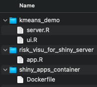
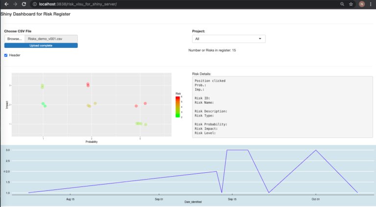

Intro
Let me step aside from the NLP topic for a moment. It’s unfortunate that I want to do so many things, and I don’t really have all the time I wish I had, but as long as I am learning as I go, well, all is good.
I just wanted to make quick entry to mention that I finally tested “Shiny Server”.
I recently was faced more directly with the need to actually share my work, beyond slides and PPTs.
For now, IOSlides in RStudio did the trick. I have also used Tableau, QlikView and a bit of PowerBI, all great tools (and reasonably easy to get to a basic level!) but for those of us that use R & RStudio, we are often drawn into Shiny.
Shiny is simply… Great. Not as easy as these other tools, that’s true (it is not the same learning curve, at least from my experience), but arguably it is more powerful. Instead of a Dashboard, you can run code (ML, for example) AND show it, updated on the go. So you present an application, not “simply” a dataset. I’ll have to look into the alternatives, I know some do try to do the same, but that’s not for today.
And insisting on the learning curve (I’ll repeat myself about that today): I keep learning about Shiny, the same way I keep learning about Docker & R stuff, packages, RStudio capacities… Heck, a lot to keep me busy for the upcoming months (or years :S). Let’s just hope this Blog doesn’t die along the way…
Side note: I am also looking into many other things lately (git, more plumbeR, docker-compose & Swarm, Shiny modules (wow that’s going to help make the Shiny bits of code cleaner), closures & environments (which I know a bit about, but clearly there is more to it), RStudio Projects (and the much commented “don’t use setwd()” mantra), and how to use all that…). But that will amount to another few posts. For now: back to Shiny Server…
Shiny was already an excellent excellent package, very powerful. Well: Shiny Server makes it even better!
Today we’ll get to provide two applications over a Web interface from a Shiny Server:

Getting up and running
As usual, thanks to the community out there, it was VERY easy.
docker pull rocker/shiny
docker run -p 3838:3838 --rm rocker/shinyAnd that’s about it. As usual, it takes a minute or two (depending on connection speed) to get the base image. Maybe l need to also look into “lighter” images, as they pile up.

Mapping our own applications
Create a folder, say “shiny_apps”. Then inside it create different folders for different Shiny applications.
For instance, let’s copy the example of KMeans (from the Shiny Gallery). A great thing about this demo, that shows a bit of the power of Shiny: You run an ML algorithm each time you tweak something in the interface. I’ve heard PowerBI now supports R, but… This is more “native”, and also I am unsure about how much of R PowerBI actually supports (I’ll look into it soon enough).
Let’s re-create our “Risks Visualization” demo from a few months back. This time we move that script into one “app.R” file, in the corresponding folder. Shiny Server will look (I believe) for either a pair of “ui.R + server.R” or an “app.R” file(s), so that should work.
I’m not convinced this is a best practice, but then you can map the “shiny_apps” folder to the container’s “/srv/shiny-server/“. From there you’ll see your different applications (see the first image above).
In order to get today’s demo to work, we’ll need some packages (our risks visualization demo depends on those), so let’s also make a Dockerfile and build that, so that our image has all the required dependencies pre-installed.
The Dockerfile, first (rather simplistic):
FROM rocker/shiny
RUN R -e "utils::install.packages(c('data.table', 'lubridate', 'dplyr',\
'ggplot2', 'ggthemes'))"One advantage of this approach of a different container for Shiny Server (instead of re-using our RStudio container, which we did until today, and was good enough to server Shiny Apps and many other things), aside from abstracting from the RStudio interface itself for the end-users, is to be able to load only packages actually used across the applications you want to share, instead of all packages we might ever need when programming. (You could even think about having different containers, with different applications, and hence only the different packages needed in each container.) This is just a small optimization.
Let’s move to the correct directory (the one with the newly created Dockerfile), and build it. Now remember the Dockerfile should be in a folder of its own (one best-practice, I believe). Then again, we could have it somewhere else (well, we should!) but for this demo – and just for that purpose -, that’ll do:
docker build -t local_shiny .So we have our directory of “shiny_apps” as follows:

Finally, let’s move up to get to our directory of shiny_apps, and launch our new container:
docker run --name shiny_server -p 3838:3838 -v `pwd`:/srv/shiny-server/ local_shinyAs seen in the first screenshot, we can now see the different applications by connecting to our Shiny server, listening on port 3838.
The difference being (compared to using our laptop’s traditional files browser): if we click on an application’s link (and note: it won’t work for the folder containing the Dockerfile, for obvious reasons), Shiny will THEN launch the application:

So here: We’ve downloaded a new container image prepared with Shiny Server (free), then created a version of it with our own Dockerfile to have all required packages. We launched that, and all applications we pointed to are now being served by our very own Shiny Server.
Yes: This was “Quick & Dirty”. But still, it worked.
Note: More to be done. So much more!
There is plenty more to do, but the above is a start. Now at some point I’ll have to test some of the many options I found out there to add “login pages” to my apps. Shiny Server Pro does this better, for sure, but I’m using the free version of it. If I go there, I might just as well consider also putting up another container in between with NGINX, for TLS support (otherwise I’ll be login with username and password over an unencrypted channel, which is not horrible while working locally on my laptop, but isn’t good in an actual client-server setup).
Once there, using the NGINX to also front our RStudio container will make sense.
At that point I might want to look a bit more into docker-compose to bring it all up and down at will, along with our Database container too.
Meanwhile there is some space to improve on other fronts, like using a lighter container (maybe alpine-based) to run simple R scripts with a limited set of packages, tied to crontabs… Or keep working on code quality (logging, projects, environments, and a long etc.).
Even Shiny applications require some time to learn how to better code them (for instance I’ve been reading up on “Shiny Modules” lately, which I wasn’t aware of… More proof of my actual ignorance, which keeps growing as I learn more and more about R…)
But that will make for contents for future entries.
Conclusions
Getting a basic/demo Shiny Server up and running in a new Docker container took, literally, 3 minutes.
Getting our own application(s) into the container wasn’t too painful either. Do look into further settings and better ways to do it though (e.g. do not run the Shiny service as root, which apparently is the default for the rocker/shiny container…)
I’m putting together quite a few containers, and many other potential candidates (using plumbeR, for instance), which pushes me to start thinking about a more “operational” setup. I’ll work on that in upcoming entries (ALTHOUGH I’m also far from done one the NLP front… “Things-to-learn” keep adding up, which is good, although frustrating at times).
I hope you liked it!
Some External Resources
The Shiny Gallery: KMeans demo